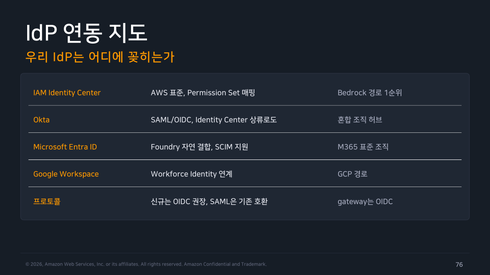
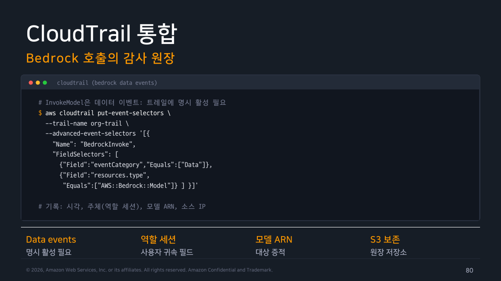
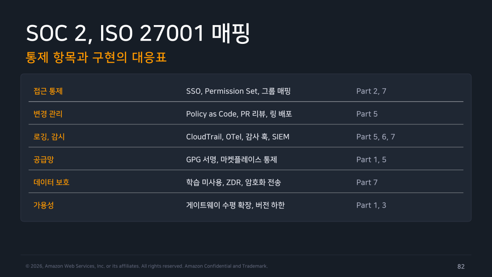

Part 7 — 신원, 데이터, 컴플라이언스¶
한 줄 요약¶
신원은 Claude 계정 레벨과 클라우드 IAM 레벨이라는 서로 다른 두 층으로 갈라집니다. 오프보딩(퇴사자의 접근 권한을 회수하는 절차)은 회사 계정 시스템 한 곳을 끊는 방식으로 설계하고, 데이터 정책과 감사 증적은 미리 패키지로 묶어둡니다.
왜 알아야 하나¶
이 파트는 감사관이 회의실에 들어와서 던지는 질문 목록이라고 생각하면 됩니다. "이 도구를 누가 쓸 수 있습니까?", "퇴사자는 언제 잘립니까?", "우리 코드가 모델 학습에 쓰입니까?", "누가 언제 무슨 모델을 불렀는지 보여주실 수 있습니까?" 네 질문 모두 그 자리에서 만들어낼 수 있는 답이 아닙니다. 도입 시점에 어떤 층에 무엇을 걸어뒀는지가 그대로 답이 됩니다.
특히 첫 질문이 함정입니다. "누가 쓸 수 있는가"에 답하려면 서로 다른 두 개의 시스템을 같이 설명해야 합니다. 그런데 이 둘을 하나로 착각하기가 쉽습니다. 하나로 착각한 채 한쪽만 설명하면 답이 절반만 맞습니다. 교재도 이 지점을 "혼동이 가장 잦은 지점"이라고 못 박습니다. §1이 이 파트에서 가장 중요한 절인 이유입니다.
이 파트는 실습이 없습니다
- 다루는 작업 셋: 회사 IdP(Identity Provider, 사내 계정과 로그인을 한곳에서 관리하는 시스템. Okta·Entra ID·Google Workspace 같은 것) 연동, CloudTrail(AWS에서 누가·언제·무엇을 했는지 기록해주는 감사 로그 서비스)의 Bedrock 데이터 이벤트 활성화, SOC 2(보안 통제가 제대로 돌아가는지 외부 감사기관이 검증해주는 컴플라이언스 인증) 증적 패키지 구성.
- 못 하는 이유: 셋 다 회사 IdP와 조직 AWS 계정의 관리자 권한이 있어야 해볼 수 있습니다. Part 2의 Bedrock SSO는 개인 AWS 계정으로 재현했지만, 여기서 필요한 건 개인 계정으로는 만들 수 없는 실제 조직 IdP 테넌트와 조직 단위 CloudTrail이라 같은 방식이 통하지 않습니다.
- 그래서: 이 문서는 개념과 설계 관점 정리로만 씁니다. 실행하지 않은 것을 실행한 척 옮겨 적지 않는 편이 나중에 이 문서를 다시 볼 때 훨씬 쓸모 있습니다.
1. 신원 통합의 두 레벨 — 이 챕터 전체를 관통하는 구분¶
Claude Code를 조직에 깔 때 "신원"이라는 단어는 두 가지 완전히 다른 것을 가리킵니다. 이름이 같아서 하나처럼 보이지만, 관리하는 화면도 다르고 통제하는 대상도 다릅니다. 먼저 각각이 어떤 질문에 답하는 층인지부터 잡아두면 나머지가 쉬워집니다.
첫 번째는 Claude 계정 레벨입니다. 이 층이 답하는 질문은 "이 사람이 Claude 제품에 로그인할 수 있는가"입니다. 누가 Claude 조직의 구성원인지, 좌석(seat)을 누구에게 배정했는지, 그 사람이 회사 계정으로 claude.ai에 들어올 수 있는지를 다룹니다. 관리 화면은 claude.ai 콘솔입니다. Enterprise Administrator Guide가 안내하는 절차는 전부 이 층의 이야기입니다.
이 층에서 쓸 수 있는 기능은 플랜에 따라 갈립니다. 좌석 배정은 Teams·Enterprise 공통이지만, SSO(Single Sign-On, 회사 계정 하나로 여러 서비스에 로그인하게 해주는 방식)와 SCIM(IdP에 입사·퇴사 처리를 하면 그 변경이 자동으로 Claude 계정 생성·삭제까지 반영되게 하는 프로비저닝 표준, System for Cross-domain Identity Management) 프로비저닝은 Enterprise 플랜의 추가 기능입니다. Teams는 자체 서비스형 협업·관리 도구·청구 관리가 중심입니다. SSO는 Enterprise가 도메인 캡처·역할 기반 권한·컴플라이언스 API와 함께 얹는 기능입니다.
두 번째는 클라우드 IAM 레벨입니다. IAM(Identity and Access Management)은 클라우드에서 누가 어떤 자원에 무엇을 할 수 있는지 정하는 권한 관리 시스템입니다. 이 층이 답하는 질문은 "이 사람의 터미널이 Bedrock에 모델 호출 API(InvokeModel)를 부를 수 있는가"입니다.
이 층에서 움직이는 것은 IAM Identity Center, Workforce Identity, Entra ID입니다. 그리고 실제 권한을 최종적으로 결정하는 것은 Permission Set입니다. LLM 게이트웨이를 경유하는 구조라면 게이트웨이의 OIDC(OpenID Connect, 요즘 표준으로 쓰는 로그인 위임 프로토콜) 인증이 이 층을 대신 흡수해 갑니다.
Part 2에서 다룬 Bedrock IAM 정책과 Identity Center SSO 흐름은 전부 이 두 번째 층의 이야기였습니다. 그때 "키를 나눠주지 않고 브라우저 로그인만으로 단기 자격증명을 받는다"고 정리한 그 구조 말입니다.
여기서 새로 다루는 SSO·SCIM·좌석 배정은 그것과 이름만 비슷할 뿐 다른 층입니다. 두 층 모두 같은 회사 IdP를 출발점으로 쓰기 때문에 로그인 화면 흐름이 닮아 보입니다. 하지만 한쪽을 껐다고 다른 쪽이 같이 꺼지지는 않습니다.
flowchart TD
IDP["<b>회사 IdP</b><br/>Okta / Entra ID / Google Workspace"]
IDP --> L1["<b>Claude 계정 레벨</b><br/>SSO 로그인 · SCIM 프로비저닝 · 좌석 배정<br/>관리 지점: claude.ai 콘솔"]
IDP --> L2["<b>클라우드 IAM 레벨</b><br/>Bedrock 호출 권한<br/>관리 지점: Permission Set"]
L1 --> R1["결과: claude.ai / Teams·Enterprise<br/>제품에 들어올 수 있는가"]
L2 --> R2["결과: 터미널이 InvokeModel을<br/>부를 수 있는가"]
style IDP fill:#ede7f6,stroke:#5e35b1,stroke-width:2px,color:#000
style L1 fill:#e3f2fd,stroke:#1976d2,color:#000
style L2 fill:#e8f5e9,stroke:#388e3c,color:#000
style R1 fill:#f5f5f5,stroke:#9e9e9e,color:#000
style R2 fill:#f5f5f5,stroke:#9e9e9e,color:#000두 층을 구분하는 가장 빠른 방법은 누르는 화면을 묻는 것입니다. "이 통제는 claude.ai 콘솔에서 누르는가, 아니면 AWS 콘솔에서 누르는가." 화면이 다르면 다른 층입니다.
그런데 왜 이 구분이 실무에서 사고로 이어질까요. 조직마다 두 층 중 하나만 쓰는 경우가 흔하기 때문입니다. 그리고 문서와 슬라이드는 두 층을 늘 나란히 설명합니다. 그래서 자기 조직에 없는 층의 절차를 찾다가 시간을 버립니다. 더 나쁜 경우는 있는 층 하나를 잠가놓고 안심하는 사이에 다른 층이 열린 채로 남는 것입니다.
실제 조직은 대개 셋 중 하나의 모양을 하고 있습니다.
-
클라우드 경로만 쓰는 조직은 Bedrock으로만 모델을 호출하고 claude.ai 제품은 쓰지 않습니다. 이런 회사에는 클라우드 IAM 레벨 하나만 존재합니다. 애초에 Claude 조직도 좌석도 없으니 SSO·SCIM·좌석 배정 문서는 읽을 필요가 없습니다. 오프보딩도 Permission Set 회수 하나로 끝납니다.
-
좌석제만 쓰는 조직은 Teams·Enterprise 플랜을 사서 claude.ai와 Claude Code를 함께 쓰고, 자체 클라우드 계정은 거치지 않습니다. 이런 회사에는 반대로 Claude 계정 레벨 하나만 존재합니다. AWS IAM 정책을 아무리 들여다봐도 이 도구의 접근 통제는 나오지 않습니다. 애초에 Bedrock을 안 쓰기 때문입니다.
-
둘 다 쓰는 조직도 있습니다. 일반 개발자는 좌석제로, 파이프라인과 특정 팀은 Bedrock으로 가는 혼합 구조입니다. 이때가 사고가 가장 잘 납니다. 한 사람이 두 경로를 다 가질 수 있기 때문입니다. 퇴사 처리를 하면서 좌석만 회수하고 Bedrock 권한을 남겨두면, 그 사람은 터미널에서 여전히 모델을 호출할 수 있습니다. §3의 그룹 단일 원천과 §4의 대조 리포트가 특히 이 조직에 필요한 이유입니다.
자기 조직이 어느 모양인지부터 확정하고 읽으세요. 그러면 이 파트의 나머지에서 어느 절이 자기 것인지 바로 갈립니다.
2. 우리 IdP는 어디에 꽂히는가¶
두 층을 구분했으면 다음 질문이 나옵니다. "우리 회사가 이미 쓰는 IdP를 어디에 연결하느냐"입니다. 교재는 네 가지 대표 경로를 제시합니다. 각각 잘 맞는 조직의 모양이 다릅니다.
-
AWS IAM Identity Center: AWS 표준 경로이고 Permission Set 매핑이 그대로 권한이 됩니다. Bedrock으로 갈 거라면 1순위로 검토할 선택지입니다.
-
Okta: SAML(로그인 인증서를 XML로 주고받는 더 오래된 SSO 프로토콜, OIDC의 전신 격)과 OIDC를 모두 지원합니다. 그 자체로 바로 붙일 수도 있습니다. 다만 Identity Center의 상류(upstream, 인증을 먼저 처리해서 넘겨주는 쪽) IdP로 두는 구성이 특히 유용합니다. AWS·SaaS·온프렘이 뒤섞인 혼합 조직에서 허브 역할을 합니다.
-
Microsoft Entra ID: Microsoft Foundry와 자연스럽게 결합하고 SCIM을 지원합니다. M365가 회사 표준인 조직이면 여기가 기본값입니다.
-
Google Workspace: Workforce Identity와 연계해 GCP 경로(Vertex AI)로 이어집니다.
프로토콜 선택은 한 줄로 정리됩니다. 신규 연동은 OIDC를 권장하고, SAML은 기존 시스템 호환용으로 남깁니다. 게이트웨이를 두는 구조라면 게이트웨이가 OIDC로 인증을 받는 형태가 표준입니다.

▲ 교재 슬라이드 76 — IdP 연동 지도
여기서 하나 짚어둡니다. 이 표는 "어느 IdP가 좋은가"를 고르는 표가 아닙니다. 회사 IdP는 이미 정해져 있고, Claude Code를 쓰겠다고 바꾸지 않습니다. 이 지도의 용도는 다릅니다. 이미 있는 IdP가 §1의 두 층 중 어디에, 어떤 프로토콜로 꽂히는지 확인하는 것입니다. 그래서 실제 판단은 "우리 회사 IdP가 무엇인가"에서 출발해 한 갈래로 내려갑니다.
flowchart TD
S{"우리 조직의<br/>기존 IdP는?"}
S -->|"AWS Identity Center"| A["<b>Identity Center 직결</b><br/>Permission Set이 곧 권한"]
S -->|"Okta"| B["<b>Identity Center 상류로 연결</b><br/>혼합 조직 허브 역할"]
S -->|"Entra ID"| C["<b>Foundry 결합 · SCIM</b><br/>M365 표준 조직"]
S -->|"Google Workspace"| D["<b>Workforce Identity 연계</b><br/>Vertex 경로"]
A --> P{"게이트웨이를<br/>경유하나?"}
B --> P
C --> P
D --> P
P -->|"예"| G["게이트웨이가 OIDC로 인증<br/>클라우드 IAM 층을 흡수"]
P -->|"아니오"| H["클라이언트가 직접<br/>단기 자격증명 획득"]
style S fill:#ede7f6,stroke:#5e35b1,stroke-width:2px,color:#000
style P fill:#ede7f6,stroke:#5e35b1,stroke-width:2px,color:#000
style A fill:#e3f2fd,stroke:#1976d2,color:#000
style B fill:#e3f2fd,stroke:#1976d2,color:#000
style C fill:#e3f2fd,stroke:#1976d2,color:#000
style D fill:#e3f2fd,stroke:#1976d2,color:#000
style G fill:#e8f5e9,stroke:#388e3c,color:#000
style H fill:#e8f5e9,stroke:#388e3c,color:#000마지막 분기가 실무에서 의외로 큰 차이를 만듭니다. 게이트웨이를 두면 개별 개발자가 클라우드 자격증명을 직접 다룰 일이 없어집니다. 인증·로깅·한도도 한 지점으로 모입니다. 대신 그 게이트웨이가 단일 장애점이 됩니다. 그래서 Part 3에서 다룬 수평 확장이 전제 조건이 됩니다.
반대로 게이트웨이 없이 직결하는 구조는 구성 요소가 적어 단순합니다. 대신 중앙 로깅 요구가 생기면 각 클라우드 계정의 로그를 따로 모아야 합니다.
3. 그룹 매핑 — 하나의 원천으로 두 층을 움직인다¶
두 층이 갈라져 있다는 걸 알고 나면 다음 걱정이 생깁니다. 층마다 권한을 따로 관리하면 언젠가 반드시 어긋납니다. 클라우드 쪽에서는 권한을 뺐는데 게이트웨이 쪽에는 그대로 남아 있는 식입니다.
해법은 IdP 그룹을 단일 원천(single source)으로 삼는 것입니다. 사람에게 권한을 직접 붙이지 않습니다. 사람은 그룹에만 넣습니다. 그리고 각 층이 그 그룹 이름을 읽어서 자기 방식대로 해석합니다.
클라우드 층에서는 그룹이 Permission Set으로 번역됩니다. idp:eng-platform은 PS-Claude-Full로, idp:eng-default는 PS-Claude-Std로, idp:contractors는 PS-Claude-Min으로 매핑하는 식입니다. 그 결과 IAM 정책에 차등이 생깁니다. 어떤 그룹은 모델 전체를 부를 수 있고, 어떤 그룹은 제한된 모델만 부를 수 있게 됩니다.
게이트웨이 층은 같은 그룹 이름으로 라우팅 규칙을 씁니다. Opus를 쓸 수 있는지, 지출 한도를 얼마로 줄지가 이 층에서 결정됩니다. Part 6에서 다룬 한도 판정도 이 그룹을 기준으로 돌아갑니다.
겸직처럼 한 사람이 여러 그룹에 속하는 경우는 반드시 생깁니다. 그래서 상위 그룹 우선 규칙을 미리 정해두어야 합니다. 정해두지 않으면 매핑 도구마다 다르게 해석하고, 두 층의 판정이 갈라집니다.
flowchart LR
G["<b>IdP 그룹</b><br/>단일 원천"] --> C1["idp:eng-platform"]
G --> C2["idp:eng-default"]
G --> C3["idp:contractors"]
C1 --> CL["<b>클라우드 층</b><br/>PS-Claude-Full<br/>PS-Claude-Std<br/>PS-Claude-Min"]
C2 --> CL
C3 --> CL
C1 --> GW["<b>게이트웨이 층</b><br/>모델 라우팅<br/>지출 한도 차등"]
C2 --> GW
C3 --> GW
CL --> R1["IAM 정책 차등"]
GW --> R2["Opus 접근 · 한도 판정"]
style G fill:#ede7f6,stroke:#5e35b1,stroke-width:2px,color:#000
style CL fill:#e8f5e9,stroke:#388e3c,color:#000
style GW fill:#e3f2fd,stroke:#1976d2,color:#000
style C1 fill:#fafafa,stroke:#bdbdbd,color:#000
style C2 fill:#fafafa,stroke:#bdbdbd,color:#000
style C3 fill:#fafafa,stroke:#bdbdbd,color:#000
style R1 fill:#f5f5f5,stroke:#9e9e9e,color:#000
style R2 fill:#f5f5f5,stroke:#9e9e9e,color:#000이 구조의 진짜 이점은 운영에서 나옵니다. 그룹을 바꾸면 그게 곧 권한 변경이 됩니다. 팀을 옮긴 사람의 권한을 바꾸려고 IAM 콘솔과 게이트웨이 설정을 각각 열 필요가 없습니다. IdP에서 그룹 하나만 옮기면 두 층이 알아서 따라옵니다. 감사관에게 하는 설명도 짧아집니다. "권한 부여 기록을 보여주세요"라는 요구에 IdP 그룹 변경 이력 하나로 답할 수 있기 때문입니다.
반대로 이 원칙을 어기면 어떤 일이 벌어지는지도 알아둘 만합니다. 흔한 경우는 이렇습니다. 급한 요청이 들어와서 특정 사용자 한 명에게 IAM 정책을 직접 붙여줍니다. 그 순간 그 사람의 실제 권한은 그룹만 봐서는 알 수 없게 됩니다. 나중에 오프보딩하면서 그룹만 정리하면 그 예외 권한은 그대로 남습니다.
§4의 대조 리포트가 이런 예외를 잡아내는 그물입니다. 하지만 애초에 예외를 만들지 않는 편이 훨씬 쌉니다. 정말 필요하다면 예외도 그룹으로 만들어 원천 안에 두는 쪽이 낫습니다.
4. 세션과 오프보딩 — 떠나는 순간 접근도 끝나야 한다¶
SSO 구조를 택하는 가장 실용적인 이유가 여기 있습니다. IdP에서 계정을 비활성화하는 순간이 곧 접근 종료 시점이 되기 때문입니다. 개발자마다 API 키를 나눠주는 구조였다면, 퇴사자가 어떤 머신에 어떤 키를 남겼는지 일일이 추적해야 합니다. SSO에서는 원천 하나만 끊으면 됩니다.
다만 "끊었다"와 "정말 끝났다" 사이에는 시간 차가 있습니다. 교재는 이 시간창을 네 단계로 나눠 관리하라고 정리합니다.
-
CUT(원천 절단)은 IdP 계정을 비활성화하는 단계입니다. 그 시점부터 새로운 로그인이 불가능해집니다. 오프보딩의 단일 지점이고, 여기가 확실하지 않으면 나머지 단계는 의미가 없습니다.
-
TTL(세션 수명)에서 TTL은 Time To Live, 즉 발급된 자격증명이 살아 있는 시간을 뜻합니다. 이미 발급된 SSO 세션과 STS(AWS Security Token Service, 짧게 쓰고 버리는 임시 자격증명을 발급해주는 서비스) 자격증명은 이 시간이 지나기 전까지 계속 유효합니다. 그래서 만료 시간을 업무 리듬에 맞춰 짧게 잡아둡니다. 하루 단위로 로그인하는 조직이라면 8~12시간대가 무난합니다. 길게 잡을수록 오프보딩 후에 남는 시간창이 그대로 길어집니다.
-
SWEEP(잔여 정리)가 필요한 이유는 이렇습니다.
setup-token같은 장기 토큰은 IdP를 끊어도 자동으로 죽지 않습니다. 그래서 누구에게 언제 발급했는지 대장을 따로 만들어두고, 그 대장을 기준으로 회수합니다. 대장이 없으면 회수할 대상 목록 자체가 없습니다. -
PROOF(증적)은 오프보딩이 실제로 작동했는지 확인하는 단계입니다. IdP 비활성 시각과 그 사용자의 마지막 API 호출 시각을 나란히 놓고 보는 대조 리포트를 만듭니다. 비활성 이후에 호출이 찍혔다면 어딘가 경로가 남아 있었다는 뜻입니다. 그 경로는 대개 장기 토큰입니다.
네 단계를 시간 순서로 놓고 보면 하나가 분명해집니다. 어디까지가 자동으로 닫히고, 어디부터 사람이 직접 손을 대야 하는지입니다.
flowchart TD
T0["<b>T0 · IdP 계정 비활성</b>"] --> A["신규 SSO 로그인 차단<br/>신규 STS 발급 차단<br/><i>즉시 반영</i>"]
T0 --> B["이미 발급된 세션 · STS<br/><i>TTL 만료까지 유효</i>"]
T0 --> C["setup-token 등 장기 토큰<br/><i>IdP와 수명이 무관 — 자동으로 안 죽음</i>"]
B --> D["<b>T0 + TTL</b><br/>잔여 창 종료"]
C --> E["<b>수동 회수 시점</b><br/>발급 대장 기반 SWEEP"]
D --> F["<b>대조 리포트</b><br/>비활성 시각 vs 마지막 호출 시각"]
E --> F
A --> F
style T0 fill:#673ab7,stroke:#4527a0,stroke-width:3px,color:#fff
style A fill:#e8f5e9,stroke:#388e3c,color:#000
style B fill:#fff8e1,stroke:#f9a825,color:#000
style C fill:#ffebee,stroke:#c62828,color:#000
style D fill:#f5f5f5,stroke:#9e9e9e,color:#000
style E fill:#f5f5f5,stroke:#9e9e9e,color:#000
style F fill:#e3f2fd,stroke:#1976d2,color:#000초록 갈래만 자동으로 닫힙니다. 노란 갈래는 시간이 지나면 닫히지만 그때까지는 열려 있습니다. 빨간 갈래는 누군가 직접 회수하지 않으면 영원히 닫히지 않습니다. 오프보딩 절차서에 빨간 갈래에 해당하는 항목이 몇 개나 적혀 있는지 세어보세요. 그 절차서가 실제로 작동하는지 판단하는 가장 빠른 방법입니다.
현장 메모
오프보딩에서 흔히 놓치는 지점은 "권한 회수가 즉시 반영되는 층과 아닌 층"을 구분하지 않는 것입니다. IdP 세션을 무효화하면 새로 인증을 받아야 하는 경로는 즉시 막힙니다. SSO 로그인, 새 STS 발급이 여기 해당합니다.
그런데 이미 손에 들어간 자격증명은 그 자체로 유효 기간을 갖고 있습니다. 그래서 만료 전까지는 그대로 살아 있습니다. setup-token으로 만든 장기 토큰은 한술 더 뜹니다. 이건 아예 IdP 세션과 수명이 연결돼 있지 않습니다. Part 2의 인증 우선순위를 떠올리면 이유가 분명합니다. 환경변수 키와 OAuth 장기 토큰은 IdP 흐름을 거치지 않는 별도 경로이기 때문입니다.
그래서 실무 체크리스트는 세 줄이 됩니다. ① IdP 계정 비활성 ② 세션·STS TTL이 지나기를 기다리거나 강제 만료 ③ 장기 토큰 대장에서 그 사람 몫을 회수. ③번을 빠뜨리면 ①번의 효과가 무의미해집니다.
Warning
이월 숙제: setup-token의 1년 유효와 오프보딩의 긴장 관계. CI 파이프라인처럼 사람이 브라우저 로그인을 할 수 없는 환경에서는 장기 토큰이 필요합니다. 그런데 그 장기성이 곧 오프보딩의 구멍이 됩니다. "짧은 TTL로 잔여 창을 줄인다"는 설계 원칙과 정면으로 부딪히는 지점입니다.
지금 시점에서 정리할 수 있는 건 방향까지입니다. 장기 토큰을 사람 계정이 아니라 서비스 주체에 묶고, 발급 대장에 소유 팀·용도·만료일을 남기고, 회전 주기를 오프보딩과 분리해 별도로 운영한다는 것입니다. 실제 조직 계정에서 검증해야 확정할 수 있는 부분이라 이번 주에는 열어둡니다.
5. 데이터 정책 — 감사관의 첫 질문¶
"우리 코드가 모델 학습에 쓰입니까?" 이게 거의 항상 첫 질문입니다. 답부터 말하면 Team·Enterprise 플랜, API, 그리고 Bedrock·Vertex·Foundry 같은 클라우드 경로 모두 기본적으로 학습에 사용되지 않습니다.
이건 구두 약속이 아니라 공식 데이터 사용 정책 문서에 적혀 있는 내용입니다. 그래서 감사 대응에서는 반드시 문서 링크와 확인 시점 스냅샷을 함께 제시합니다.
다음은 보존(retention), 즉 "요청과 응답을 얼마나 오래 저장해 두는가"입니다. 이건 경로마다 다릅니다. 그리고 클라우드 경로를 쓰면 그 공급자의 정책을 그대로 물려받습니다. Bedrock으로 호출한 요청은 AWS 쪽 데이터 처리 조건을 따릅니다. 그래서 감사관에게 보여줄 것은 "Anthropic 정책"이 아니라 "우리가 실제로 쓰는 경로의 정책"입니다. 자기 조직이 어느 경로를 쓰는지가 Part 2의 공급자 결정과 직결되는 셈입니다.
보존 자체를 없애는 선택지도 있습니다. ZDR(Zero Data Retention) 은 요청 처리가 끝나면 입력과 출력을 저장하지 않는 구성입니다.
다만 여기서 정정할 게 있습니다. ZDR은 표준 Enterprise 플랜에 자동으로 포함되는 기능이 아닙니다. 공식문서는 "자격을 갖춘 계정에 한해, 계정 담당팀이 조직 단위로 개별 활성화한다"고 설명합니다. 규제 산업이라 "저장하지 않음"을 계약 문서로 증명해야 하는 조직이라면, Enterprise 계약을 맺었다는 사실만으로 안심하면 안 됩니다. ZDR을 따로 신청해서 활성화했는지부터 확인하고 협의를 시작해야 합니다.
반대 방향의 요구도 있습니다. 저장을 없애는 게 아니라 요청 하나하나를 반드시 남겨야 하는 경우입니다. 이때는 LLM 게이트웨이를 두고 중앙에서 로깅합니다. Part 6에서 다룬 게이트웨이 원장이 그대로 감사 증적이 됩니다. 민감한 요청만 다른 모델이나 다른 리전으로 보내는 라우팅도 같은 지점에서 겁니다.
마지막으로 잊기 쉬운 게 개발자 노트북에 남는 데이터입니다. 세션 트랜스크립트(대화 기록)는 개발자 머신에 파일로 쌓입니다. cleanupPeriodDays 설정에 따라 정리되고 기본값은 30일입니다. 서버 쪽 보존 정책을 아무리 짧게 잡아도 이 값이 그대로면 로컬에는 30일치가 남아 있습니다. 조직 표준 보존 연한이 따로 있다면 이 값도 같이 맞춰야 앞뒤가 맞습니다.
여기까지 정리하면 데이터가 남을 수 있는 자리는 결국 세 층입니다.
- 공급자 층은 Anthropic 또는 AWS 같은 클라우드 공급자 쪽에 남는 것
- 조직 자체 층은 게이트웨이 원장, 그리고 SIEM(Security Information and Event Management, 회사 곳곳의 로그를 한곳에 모아 검색하고 경보를 띄우는 보안 로그 플랫폼)에 들어간 것
- 로컬 층은 개발자 머신에 남는 것
ZDR은 첫 번째 층에만 작용합니다. 나머지 둘은 조직이 스스로 만든 것이라 조직이 직접 정리해야 합니다. "데이터가 어디에 남습니까"라는 질문에 한 층만 답하면 절반짜리 답이 되는 이유입니다. §7의 GDPR 삭제 요구 대응에서도 이 세 층을 각각 짚어야 합니다.
6. CloudTrail — Bedrock 호출의 감사 원장¶
"누가 언제 무슨 모델을 불렀습니까"에 답하는 층은 클라우드 쪽 감사 로그입니다. Bedrock 경로를 쓴다면 CloudTrail이 그 원장이 됩니다.
여기서 먼저 알아둘 용어가 둘 있습니다. 하나는 트레일(trail) 인데, CloudTrail에서 "어떤 이벤트를 어디에 저장할지" 정해둔 설정 단위를 말합니다. 다른 하나는 이벤트 분류입니다. CloudTrail은 기록하는 이벤트를 두 종류로 나눕니다. 관리 이벤트(management event)는 트레일을 만들면 기본으로 기록됩니다. 반면 데이터 이벤트(data event)는 관리자가 명시적으로 켜야 기록됩니다. 어떤 API 호출이 어느 쪽에 속하는지가 "우리 로그에 이미 남아 있는가"를 가릅니다.
그런데 교재를 그대로 옮기려다 공식문서와 정면으로 어긋나는 걸 발견해서 이 절은 다시 썼습니다. 교재는 InvokeModel이 데이터 이벤트라 명시적으로 켜야 기록된다고 설명합니다. AWS 공식문서는 정반대를 말합니다. InvokeModel, InvokeModelWithResponseStream, Converse, ConverseStream 같은 주요 호출 오퍼레이션은 관리 이벤트로 분류되어 기본 트레일에 별도 설정 없이 이미 기록됩니다. 명시적으로 켜야 하는 데이터 이벤트 쪽은 InvokeAgent, 비동기 호출(StartAsyncInvoke 등), 양방향 스트리밍처럼 더 좁은 오퍼레이션 집합입니다.

▲ 교재 슬라이드 80 — CloudTrail 통합
🔴 교재 버전 드리프트: 이 절의 핵심 주장이 반대로 적혀 있었습니다. 정정 전 초안은 "InvokeModel은 데이터 이벤트라 명시 활성화가 필요하다"고 썼는데, AWS 공식문서(
logging-using-cloudtrail)는 "Amazon Bedrock logs some Runtime API operations (such as InvokeModel...) as management events"라고 명시합니다. 이 오해는 아마 다른 기능과의 혼동에서 왔을 가능성이 큽니다. Bedrock에는 요청·응답 본문 내용까지 남기는 별도 기능인 "Model invocation logging"이 있고, 이건 실제로 명시적 활성화가 필요합니다. CloudTrail의 호출 기록(누가·언제·무슨 모델을)과 본문 내용을 남기는 기능은 서로 다른 설정이라는 걸 구분해야 합니다.
그래서 맞는 출발점은 이것입니다. "우리 조직 CloudTrail이 켜져 있으니 호출 시각·주체·모델 ID·소스 IP는 이미 기록되고 있을 가능성이 큽니다."
다만 확인 없이 안심하면 안 된다는 것도 여전히 사실입니다. 트레일 자체가 없을 수도 있습니다. 관리 이벤트 기록이 어떤 이유로 꺼져 있을 수도 있습니다. 요청·응답 본문까지 필요한 감사 요건이라면 Model invocation logging을 별도로 켜야 합니다. "기본으로 기록된다"와 "우리 트레일에서 실제로 기록되고 있는지 확인했다"는 다른 이야기입니다. 그래서 아래처럼 직접 조회해 확인하는 습관은 그대로 유효합니다.
# 트레일에 Bedrock 관리 이벤트가 실제로 기록되고 있는지 확인
aws cloudtrail lookup-events \
--lookup-attributes AttributeKey=EventSource,AttributeValue=bedrock.amazonaws.com \
--max-results 5
이렇게 기록되는 필드가 감사에서 실제로 쓰는 것들입니다. 호출 시각, 주체(역할 세션), 모델 ID(호출 방식에 따라 ARN, 즉 AWS 자원마다 붙는 고유 식별자 형태로 찍히기도 합니다), 소스 IP입니다.
여기서 주체 필드가 특히 중요합니다. SSO 구조라면 역할 세션 이름에 사용자 식별자가 실려 옵니다. 덕분에 호출을 사람 단위로 귀속시킬 수 있습니다. §4의 오프보딩 대조 리포트가 성립하는 것도 이 필드 덕분입니다. IdP 비활성 시각과 이 로그의 마지막 호출 시각을 맞대볼 수 있으니까요.
그런데 이 사람 단위 귀속이 게이트웨이를 경유하는 순간 끊깁니다. 게이트웨이가 자기 역할로 Bedrock을 호출하기 때문입니다. 그래서 CloudTrail에 찍히는 주체는 개별 개발자가 아니라 게이트웨이 서비스 역할 하나로 수렴합니다. 소스 IP도 게이트웨이의 것입니다.
정리하면 이렇습니다. "누가 호출했는가"의 답은 게이트웨이 요청 원장에만 있습니다. "모델이 실제로 호출됐는가"의 답은 CloudTrail에만 있습니다. 두 로그를 요청 ID나 타임스탬프로 이어 붙일 수 있게 미리 설계해두어야 합니다. 안 그러면 감사관이 "이 사용자가 이 시각에 무엇을 호출했습니까"라고 물었을 때 한 번에 답할 수 없습니다. §10에서 두 로그를 같은 패키지에 묶으라고 하는 이유가 이것입니다.
저장은 S3에 남기고, 조직 표준 연한에 맞춰 보존합니다(§8). 그리고 분기 리뷰 항목에 확인을 넣어두는 편이 안전합니다. 관리 이벤트가 실제로 기록되고 있는지, Model invocation logging이 필요한지를 주기적으로 보는 것입니다. 트레일 설정을 누군가 바꾸거나 새 계정이 조직에 추가되면 이 항목만 조용히 빠지는 일이 생깁니다. 로그는 켜기 전 기간을 소급해서 만들 수 없기 때문에 뒤늦게 발견하면 되돌릴 방법이 없습니다.
7. GDPR — 개인정보 관점의 네 질문¶
GDPR(General Data Protection Regulation)은 EU의 개인정보보호 규정입니다. EU 거주자의 개인정보를 다루는 조직이라면 국적과 무관하게 적용받습니다. 항목이 많아 보이지만, 실무에서 준비해야 할 답은 네 개로 좁혀집니다.
-
처리 근거: 업무 도구로 이 서비스를 쓰는 것의 적법 근거가 무엇인지, 그리고 그 사실을 구성원에게 어떻게 고지했는지를 문서로 남깁니다. 기술 설정이 아니라 사내 규정과 고지문의 영역입니다.
-
이전 경로: 데이터가 어느 리전에서 처리되는지가 곧 국경 간 이전 여부를 결정합니다. 그래서 리전 선택은 단순한 지연시간 최적화가 아닙니다.
AWS_REGION같은 조직 표준 환경변수로 고정하는 그 값이 그대로 규제 통제 축이 됩니다. 실제 설정값과 계약 문서에 적힌 처리 지역이 일치하는지 대조해두어야 합니다. -
보존과 삭제: §5에서 정리한 것들이 그대로 답이 됩니다. ZDR을 적용했다면 그 사실을 적습니다. 아니라면 경로별 retention 정책과 로컬
cleanupPeriodDays주기를 명시합니다. 세 층(공급자·게이트웨이·로컬)을 다 적어야 답이 완성됩니다. -
정보주체 권리: 정보주체는 그 개인정보의 당사자, 즉 우리 회사 구성원 본인입니다. 본인이 "내 데이터를 보여달라" 또는 "지워달라"고 요구했을 때 대응할 절차를 미리 만들어둡니다. 이 항목에서 실제로 발목을 잡는 건 대개 로그입니다. 게이트웨이 원장이나 SIEM 인덱스에 프롬프트 본문이 통째로 남아 있으면, 그 안에 개인 식별자가 섞여 들어갔을 수 있기 때문입니다. 로그에 무엇을 남길지를 설계 단계에서 정하는 편이, 나중에 로그를 뒤져 개인정보를 골라내는 것보다 훨씬 쉽습니다.
8. SOC 2 · ISO 27001 — 통제 항목은 이미 만든 것으로 채워진다¶
ISO 27001은 정보보안 관리체계를 갖췄는지 심사받는 국제 표준 인증입니다. SOC 2와 함께 기업 고객이 가장 자주 요구하는 두 인증입니다.
이 절이 이 챕터를 마무리하는 지점입니다. 여기까지 Part 1부터 Part 6까지 만들어온 것들이 사실은 인증 통제 항목의 구현체였다는 걸 확인하는 자리이기 때문입니다. 새로 뭔가를 만드는 게 아닙니다. 이미 있는 메커니즘에 통제 번호를 붙이는 작업입니다.

▲ 교재 슬라이드 82 — SOC 2, ISO 27001 매핑
-
접근 통제는 SSO·Permission Set·그룹 매핑으로 답합니다. Part 2에서 만든 키 없는 인증 흐름, 그리고 이 파트 §1~§3의 두 레벨 구분과 그룹 단일 원천이 그대로 증거가 됩니다. "권한 부여와 회수가 통제된 절차로 이뤄지는가"라는 질문에 IdP 그룹 이력으로 답하는 것입니다.
-
변경 관리는 Part 5의 Policy as Code가 답입니다. 설정을 사람이 콘솔에서 손으로 바꾸지 않습니다. 저장소에 커밋하고, PR 리뷰를 거치고, 링(ring) 단위로 단계 배포합니다. 이 구조 자체가 변경 관리 통제입니다. 심사에서 요구하는 "변경 승인 기록"이 PR 이력으로 이미 존재합니다.
-
로깅과 감시는 세 파트에 걸쳐 있습니다. Part 5의 감사 훅, Part 6의 OTel(OpenTelemetry, 애플리케이션의 지표와 로그를 표준 형식으로 내보내는 오픈소스 규격) 메트릭, 그리고 이 파트 §6의 CloudTrail이 각각 다른 층을 커버합니다. SIEM으로 모으면 조회 지점이 하나가 됩니다.
-
공급망은 Part 1의 GPG 서명 검증(내려받은 설치 파일이 진짜 배포처가 만든 것이 맞는지 암호 서명으로 확인하는 절차)과 Part 5의 마켓플레이스·플러그인 통제입니다. 설치되는 바이너리와 확장의 출처를 통제한다는 항목이 여기 대응합니다.
-
데이터 보호는 이 파트 §5입니다. 학습 미사용, ZDR, 전송 구간 암호화가 답이 됩니다. 앞서 강조한 대로 공식 문서 스냅샷을 증거로 붙입니다.
-
가용성은 Part 1과 Part 3에서 다룬 것들입니다. 게이트웨이 수평 확장과 버전 하한선 정책이 "서비스가 계속 제공되도록 관리하는가"에 대한 답입니다.
이 매핑을 미리 만들어두면 시간을 법니다. 심사 때 통제 항목을 하나씩 받아들고 "우리는 이걸 어떻게 하고 있죠?"를 처음부터 찾기 시작하면 며칠이 갑니다. 항목 → 메커니즘 → 문서 위치가 이미 적혀 있으면 그 자리에서 넘길 수 있습니다.
9. 로그 보존 정책 — 소스마다 저장소와 연한이 다르다¶
로그를 여러 층에서 남기기로 했으면, 각각을 어디에 얼마나 두는지도 정해야 합니다. 한 줄로 "전부 1년 보관"이라고 쓰면 둘 중 하나가 됩니다. 비용을 감당 못 하거나, 반대로 감사 요구를 못 맞춥니다.
-
CloudTrail은 S3에 장기 보존하고 조직 표준 연한을 따릅니다. 감사 원장 성격이라 불변 저장(Object Lock 등, 한번 쓰면 수정·삭제가 막히는 저장 방식) 옵션을 검토할 가치가 있습니다. 로그를 나중에 고칠 수 없어야 증거로서 힘이 생깁니다.
-
OTel 메트릭은 백엔드 정책을 따릅니다. 다만 원시 데이터는 90일 정도로 짧게 두고 집계값을 장기 보관하는 형태가 비용 균형이 맞습니다. 1년 전 특정 시각의 초당 토큰 수가 필요한 경우는 드물지만, 월별 추세는 오래 필요하기 때문입니다.
-
감사 훅 로그는 SIEM 인덱스에 넣고 보안 표준 연한을 적용합니다. 프롬프트나 명령 내용이 담길 수 있어서 이 인덱스 자체에 접근 통제를 거는 것이 필수입니다. 감사하려고 모은 로그가 새로운 유출 경로가 되면 본말전도입니다.
-
로컬 트랜스크립트는
cleanupPeriodDays기본값인 30일을 따릅니다. 조직 표준이 다르면 managed settings로 조정합니다(§5). -
게이트웨이 로그에는 요청 원장과 한도 판정 이력이 남습니다. 데이터베이스에 쌓이므로 백업 정책의 대상이고, 백업 보존 연한이 곧 이 로그의 실제 보존 연한이 됩니다.
10. 외부 감사 대응 준비 — 미리 싸두는 증적 패키지¶
교재가 이 파트 마지막에 두는 원칙은 한 문장입니다. 감사 통지를 받고 나서 모으기 시작하면 늦습니다. 그래서 증적을 네 묶음으로 미리 싸두고 상시 갱신 상태로 유지합니다. 갱신 리듬은 Part 6의 분기 리뷰에 얹으세요. 별도 일정으로 두면 반드시 밀립니다.
-
PACK 1 · 정책 원본: managed settings의 변경 이력, 그 변경을 담은 PR 기록, 배포 태그. "무엇을 정책으로 정했는가"의 원본입니다.
-
PACK 2 · 적용 증명: 정책을 정한 것과 실제로 적용된 것은 다릅니다.
/status의 설정 소스 표기를 수집한 결과물과 링별 검증 기록이 "정말 적용됐다"를 보여줍니다. 심사에서 가장 자주 비는 게 이 팩입니다. -
PACK 3 · 행위 원장: CloudTrail, 감사 훅, SIEM. 여기서 중요한 건 로그 자체를 통째로 넘기는 게 아닙니다. 조회 절차서를 함께 두는 것입니다. 감사관이 "이 기간 이 사용자의 호출을 보여주세요"라고 했을 때 바로 뽑을 수 있는 쿼리를 문서로 만들어두세요. 요청이 올 때마다 담당자가 붙잡히는 일이 줄고, 감사관 입장에서도 스스로 확인할 수 있게 됩니다.
-
PACK 4 · 데이터 근거: 학습 미사용, ZDR, retention에 관한 공식 문서 스냅샷입니다. 링크만 걸어두면 안 됩니다. 정책 페이지가 갱신되면 "심사 대상 기간에 어떤 조건이었는지"를 증명할 수 없기 때문입니다. 그래서 시점을 고정한 사본이 필요합니다.
현장 메모
증적 패키지에서 어려운 부분은 수집 자체가 아니라 서로 다른 시스템의 로그를 같은 시간축에 맞추는 일입니다. CloudTrail은 UTC로 찍힙니다. OTel 백엔드는 대시보드 타임존이 따로 있습니다. SIEM은 수집 시각과 이벤트 발생 시각이 다를 수 있습니다. 오프보딩 대조 리포트(§4)처럼 두 시스템의 시각을 맞대는 순간 이 차이가 바로 문제가 됩니다. 패키지를 만들 때 "모든 증적은 UTC 기준으로 정규화한다"를 한 줄 못 박아두면 나중에 몇 시간을 아낍니다.
그리고 PACK 3을 묶을 때는 CloudTrail(클라우드 층)과 OTel·감사 훅(클라이언트 층)을 한 패키지 안에 나란히 넣는 게 좋습니다. 둘은 답하는 질문이 다르기 때문입니다. CloudTrail은 "모델이 실제로 호출됐는가"에 답합니다. 감사 훅은 "그 사용자의 터미널에서 무슨 도구가 돌았는가"에 답합니다. 감사관이 궁금해하는 건 대개 둘 사이의 연결입니다. 따로 보관하면 매번 두 곳을 오가며 맞춰야 합니다.
흔한 오해 바로잡기¶
-
"SSO를 붙였으니 Bedrock 권한도 같이 정리됩니다." 아닙니다. §1의 두 레벨이 정확히 이 오해를 겨냥합니다. Claude 계정 레벨의 SSO는 claude.ai 제품 접근을 통제합니다. Bedrock 호출 권한은 클라우드 IAM 레벨의 Permission Set이 결정합니다. 같은 IdP를 출발점으로 쓰더라도 두 층은 각각 설정해야 합니다.
-
"
InvokeModel은 데이터 이벤트라 명시적으로 켜야 기록됩니다." 이 챕터 초안이 실제로 이렇게 썼다가 공식문서 대조에서 뒤집혔습니다.InvokeModel류 주요 호출은 관리 이벤트로 기본 트레일에 이미 기록됩니다. 명시적으로 켜야 하는 건 두 가지입니다.InvokeAgent·비동기 호출 같은 더 좁은 범위의 데이터 이벤트, 그리고 요청·응답 본문까지 남기고 싶을 때 켜는 별도 기능(Model invocation logging)입니다. 그래도 "우리 트레일에서 실제로 찍히고 있는지"는 확인해야 합니다. 확인 안 하고 있던 기간은 소급해서 증명할 수 없다는 결론도 그대로입니다. -
"IdP에서 계정을 끊으면 그 사람의 모든 접근이 즉시 끝납니다." 절반만 맞습니다. 새로 로그인하는 건 즉시 막힙니다. 하지만 이미 발급된 세션·STS 자격증명은 만료 전까지 살아 있습니다.
setup-token같은 장기 토큰은 누군가 회수할 때까지 살아 있습니다. TTL 단축과 토큰 대장 회수가 함께 있어야 위 문장이 참이 됩니다. -
"ZDR을 쓰면 아무 데도 데이터가 안 남습니다." 아닙니다. ZDR이 없애는 건 공급자 쪽 저장뿐입니다. 조직이 스스로 남기는 것은 그대로 남습니다. 게이트웨이 요청 원장, SIEM에 들어간 감사 훅 로그, 개발자 머신의 로컬 트랜스크립트가 그것입니다. GDPR 삭제 요구 대응에서 이 구분을 못 하면 답변이 틀립니다.
-
"컴플라이언스 대응은 도입이 끝난 뒤에 시작하는 별도 작업입니다." §8이 보여주듯 대부분의 통제 항목은 Part 1~6에서 이미 만든 메커니즘으로 충족됩니다. 남은 일은 새로 만드는 게 아니라 매핑을 적어두는 것입니다.
정리¶
이 파트의 중심은 §1입니다. 신원은 Claude 계정 레벨과 클라우드 IAM 레벨이라는 두 층으로 갈라집니다. 누르는 화면이 다르면 다른 층입니다. Part 2에서 다룬 Bedrock IAM과 Identity Center SSO는 전부 아래층 이야기였습니다. 여기서 다룬 SSO·SCIM·좌석 배정은 그 위에 따로 있는 층입니다. 이 둘을 섞으면 한쪽만 잠그고 안심하는 사고가 납니다.
두 층을 어긋나지 않게 유지하는 수단이 그룹 단일 원천입니다. 사람에게 권한을 직접 붙이지 않고 IdP 그룹에만 넣습니다. 그러면 클라우드 층은 그 그룹을 Permission Set으로, 게이트웨이 층은 라우팅 규칙으로 각각 번역해 갑니다. 그룹 변경이 곧 권한 변경이 되고, 오프보딩도 같은 지점 하나로 수렴합니다.
다만 IdP를 끊었을 때 즉시 반영되는 건 새로 로그인하는 경로뿐입니다. 그래서 짧은 TTL로 남은 시간창을 줄이고, 장기 토큰은 별도 대장으로 회수해야 문장이 완성됩니다.
데이터 쪽 답변은 네 가지로 구성됩니다. 학습 미사용, 경로별 retention, ZDR, 로컬 정리 주기입니다. 행위 기록은 CloudTrail이 맡습니다. 주요 호출은 관리 이벤트로 기본 기록되므로, "실제로 찍히고 있는지 확인했는가"가 전제가 됩니다. GDPR 네 질문도 결국 이 재료들의 조합입니다. 새로 만들어야 하는 것보다 이미 정한 것을 문서 위치와 함께 적어두는 일이 대부분입니다.
SOC 2와 ISO 27001 매핑이 이 챕터의 마무리인 이유가 그것입니다. 접근 통제는 Part 2와 이 파트, 변경 관리는 Part 5, 로깅은 Part 5·6·7, 공급망은 Part 1·5, 데이터 보호는 이 파트, 가용성은 Part 1·3. 통제 항목마다 대응하는 메커니즘이 이미 존재합니다. 증적 패키지 네 묶음을 분기 리뷰에 얹어 상시 갱신해두세요. 그러면 감사는 새로 만드는 작업이 아니라 이미 있는 것을 꺼내는 작업이 됩니다.
앞서 밝힌 대로 이 파트는 실제 조직 IdP와 AWS 조직 계정이 필요해 실행 검증 없이 개념·설계 관점으로만 정리했습니다. 다음 파트에서는 관리자에게 실제로 들어오는 문의를 진단하는 방법을 다룹니다.
출처¶
- 1차: Claude Code Deep Dive Workshop — Chapter 3 / Admin Setup / Part 7: 신원, 데이터, 컴플라이언스 (11p)
- 2차: 공식 문서 — Security · Data usage · Zero data retention